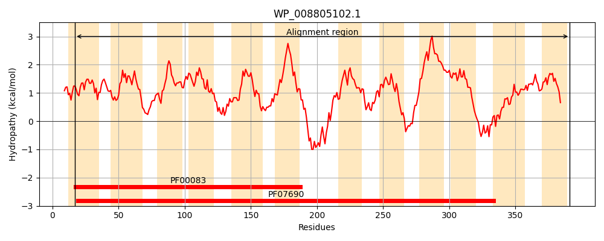
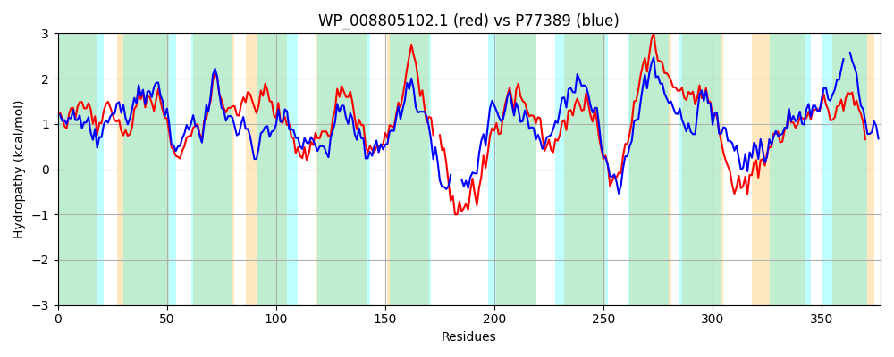

Hit Accession: P77389
Hit TCID: 2.A.1.2.65
Hit Description: gnl|BL_ORD_ID|11510 gnl|TC-DB|P77389|2.A.1.2.65 Inner membrane transport protein ydhP OS=Escherichia coli (strain K12) GN=ydhP PE=1 SV=1
Mach Len: 377
e:0.000000
Query TMS Count : 12
Hit TMS Count: 12
TMS-Overlap Score: 11.150000
Predicted Substrates:None
BLAST Alignment:
Score: 748 , Bit scores: 292 bits, E-value: 2.3e-96, Alignment length: 377, Percentage identity: 42
Query: 17 ALSVGSFGIGTTEFVIMGLLLDVAHDFHISITLAAWSITAYACGVVIGAPLLTPLLSRYPKKPALLFLMILFSIGNLGCGIAGNMTMLIIFRVITALAHASFFGISSVYAAELAPVDKRASAVSAVFLGATLANILGVPLGAWVGQYLGWRYTFFMVTLIGILSALAVIALVP--GRQAQPAVQSRIRDELKVLRHPTVLRSLLITALGFSGVFAAFTYIAPMLKTVTGMSEHLIPPVLVLFGVGMVAGNHLGGRLTDGGVRRALLLTLALLIVVLCLFPFAIQTLPGACAAVFLLGAAMFSTIPPLQMQALDSSETGKSMVSSCNIAAFNLGNAAGAWFGGLLLTAGVSLSHIPLAGACLTASGFVIASVTLSPLK 391
AL++G+FGIGTTEF MGLL +A +SI A I+AYA GV++GAPL+T LLS ++ AL+FLM +F++GN+ IA + L++ R++T+L H +FFG+ SV AA + P K+ASAV+ +F+G TLANI GVP W+G+ +GWR +F +G++S +++ +P G A+P ++ EL VL P VL +LL T LG +F +TYI+P+L+++T + + +LVL GVG GN+LGG+L D V L L LL+V++ PF + GA ++ + GAA F+ +PPLQM+ + + + SS NI AFNLGNA GA GG +++AG+ S +P+ GA + +G + V +S K
Sbjct: 9 ALAIGAFGIGTTEFSPMGLLPVIARGVDVSIPAAGMLISAYAVGVMVGAPLMTLLLSHRARRSALIFLMAIFTLGNVLSAIAPDYMTLMLSRILTSLNHGAFFGLGSVVAASVVPKHKQASAVATMFMGLTLANIGGVPAATWLGETIGWRMSFLATAGLGVISMVSLFFSLPKGGAGARP----EVKKELAVLMRPQVLSALLTTVLGAGAMFTLYTYISPVLQSITHATPVFVTAMLVLIGVGFSIGNYLGGKLADRSVNGTLKGFLLLLMVIMLAIPFLARNEFGAAISMVVWGAATFAVVPPLQMRVMRVASEAPGLSSSVNIGAFNLGNALGAAAGGAVISAGLGYSFVPVMGAIV--AGLALLLVFMSARK 379 | Protein Hydropathy Plots: |
|---|
|  |  |
Pairwise Alignment-Hydropathy Plot:
|
|---|
|  |